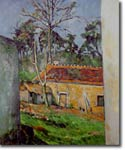
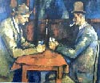

Cézanne, Paul (1839-1906), pintor francés, considerado el padre del arte moderno. Intentó conseguir una síntesis ideal de la representación naturalista, la expresión personal y el orden pictórico abstracto.
Entre todos los artistas de su tiempo, Cézanne tal vez sea el que ha ejercido una influencia más profunda en el arte del siglo XX (Henri Matisse admiraba su utilización del color y Pablo Picasso, desarrolló la estructura de la composición plana de Cézanne para crear el estilo cubista). Sin embargo, mientras vivió, Cézanne fue un pintor ignorado que trabajó en medio de un gran aislamiento. Desconfiaba de los críticos, tenía pocos amigos y, hasta 1895, expuso sólo de forma ocasional. Estaba distanciado incluso de su familia, que tachaba su comportamiento de extraño y no apreciaba el carácter revolucionario de su arte.
Cézanne nació el 19 de enero de 1839 en la ciudad de Aix-en-Provence, en el sur de Francia. Su padre era un banquero acaudalado. Fue amigo de infancia de Émile Zola y, al igual que éste, manifestó interés por el arte desde muy joven para disgusto de su padre. En 1862, después de una serie de encarnizadas discusiones familiares, el aspirante a artista recibió una pequeña asignación y fue enviado a estudiar arte a París, hacia donde ya había partido Zola. Cézanne se sintió de inmediato atraído por los elementos más radicales del mundo artístico parisino. Admiraba sobre todo al pintor romántico Eugène Delacroix y, entre los artistas más jóvenes, a Gustave Courbet y a Édouard Manet, que exponían obras que la mayoría de sus contemporáneos encontraban chocantes tanto por su estilo como por su temática.

